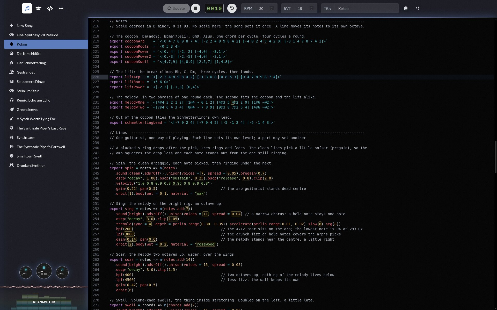

White Paper Pre-Alpha Kotlin Multiplatform AGPL-3.0 Last modified: 2026-10-02
A live-coding music system: a real-time audio engine, a pattern language and a scripting language, written from scratch and running in a browser tab. This is what exists today, and where it might go.
In the middle of the line above sits a supersaw: one note played by several slightly detuned sawtooth waves at once. The detuning is rolled fresh on every visit.
This part describes what exists today: it is built and it runs, and most of it you can hear in the demo. A few parts you cannot hear there (the offline renderer, the code generators, the benchmarks, the license terms) are here because they shape the rest. The few glances forward are marked as such.
Klangmotor, Klang for short, is a live-coding music system. You type code, it makes sound, and it keeps making sound while you edit the code. There is no compile step to wait on. The engine produces every sound in real time, in your browser: synthesized sounds computed on the spot from oscillators (tone generators), filters (which remove some frequencies) and effects, and recorded samples, such as drum kits, played by the same engine.
The quickest way in is to hear it, because the figures in this
paper are silent and the music is in the app. Load Die Kirschblüte and press Play. Then
change a number in the code and press Update: the 14 in let wait = 14,
near the top, sets how long the song waits before each new layer joins, so a smaller number brings
them in sooner (§8 has a picture of that). The rest of this paper explains what just happened. Use Chrome on a laptop or desktop; other combinations are untested
and some are bad.
A word on the names. Klangmotor is the name of the whole project, and Klang, the German word for sound, is the short form used from here on. The Motor is the audio engine at its core. It is named for the mechanical side of playing music back, a little like a mechanical piano for our era.
We wrote this mostly for engineers who might also be musicians, rather than for musicians who also code. So programming goes unexplained, while a music or synthesizer word (a filter, an envelope, a cycle) gets a short explanation where it first matters. The engine gets the most room, since it is where most of the work goes. The next section tells why the project exists.
Underneath, Klang is three layers stacked on each other, each in a module of its own. The picture below follows one line of code through them, and the table after it names the layers.
| Layer | Module | What it is |
|---|---|---|
| Language | klangscript |
A small scripting language that songs are written in: a hand-written lexer, parser and tree-walking interpreter, plus type inference that feeds the editor's completion and hover help. A script can call only what Kotlin has registered for it (§3). |
| Patterns | sprudel |
A pattern language in the Tidal/Strudel tradition: music as pure functions of time (§4). It is a frontend of the Motor, our word for anything that turns its own kind of input into timed notes for the engine. |
| Engine | audio_be · audio_fe · audio_bridge |
The Motor: oscillators, filters, effects, voice lifecycle, mixing. Audio is computed in small blocks on a dedicated audio thread, and the language side talks to it over a wire that carries seconds, not cycles (§5). It is designed to be driven by more than one frontend (§2). |
It is Kotlin Multiplatform: the same code compiles to JS (in the browser the engine runs
inside an AudioWorklet, the browser's dedicated real-time audio thread) and to the JVM
(desktop audio through javax.sound.sampled, plus an offline WAV renderer). The JVM
target does real work too: it renders songs to disk and runs the benchmark harness that
measures the engine, which also runs on Node.
Around those three layers sits the app itself. This is what it holds:
| In the app | State |
|---|---|
Code editor · klangscript-ui |
CodeMirror with completions, hover documentation and inline tool badges, fed from the same generated data as the runtime (§9), so the editor and the runtime share one source. |
| Tutorials | Written tutorials that run live in the page: every example is playable code, not a screenshot. |
| Songs | More than a dozen built-in songs, from a short sea shanty to a full techno arrangement. |
| MIDI playground | Plays the Motor live from a MIDI keyboard: keys and pads start voices directly, on any of the built-in oscillators, with no pattern language in between. Mapped for one keyboard model so far. |
| Offline render | A WAV renderer on the JVM that drives the same engine at the same block size. |
There are no accounts and no server: songs you write live in your browser's storage. Here is the editor, with one of the built-in songs playing.

Klang began as a rebuild of Strudel in Kotlin. Strudel is the JavaScript reimagining of Tidal, the Haskell live-coding environment that pioneered the cyclic pattern language at the heart of all of this. A YouTube short of a Strudel session by Switch Angel sparked the project, and Strudel's open code, open samples and documentation were the way in. The lineage runs Tidal → Strudel → sprudel (Strudel with one letter changed, the name our pattern language took when it went its own way), and Appendix A says thank you properly.
“I am a musician and a coder. I often rebuild things to understand them better, so I started rebuilding Strudel, which worked so well, that the scope of the project has reached far beyond the initial curiosity.”
Over time the rebuild turned into a different goal: a multi-platform audio engine, with sprudel as one frontend that drives musical events into it. Sprudel keeps the pattern-language way of writing, and every song is written in it today; the engine underneath is where most of the work goes. A MIDI keyboard playground (§1) is a first, small second frontend. Sheet music and tab are ideas for later, not features.
The project has a second purpose. We wanted a non-profit project to try out AI coding agents, to see what they can do and what they cannot, while building something that needs genuine human taste to become good. (The maintainer, on that last part: “I hope I have some taste ...”)
We have been at it for about nine months, two hands and one AI: a significant amount of the code was written together with Claude, and we are glad to say so (credited in Appendix A). In this paper, “we” means the maintainer and Claude.
A fair question before going deeper: does anyone actually make music this way? They do. Aphex Twin has said he made a lot of the sounds in one of his tracks with SuperCollider patches (SuperCollider is a programming language for audio). Jonny Greenwood runs Max patches on stage with Radiohead, Max being a visual environment where you wire sound-making boxes together: the stutter effect on "Go to Sleep", a generative patch driving the piano in live performances of "True Love Waits". Autechre built parts of Confield on generative Max processes, in 2001. And 65daysofstatic wrote the generative soundtrack of No Man's Sky, and opened the first live recording of it with a piece live-coded in TidalCycles.
Live coding has a scene of its own. Algoraves, club nights where the music is written as code and projected in front of the crowd, have run in cities around the world since 2012. Some of its artists have crossed into ordinary music careers: Lil Data live-codes TidalCycles on the PC Music label, and Alex McLean, who created Tidal, has played it at Glastonbury and Sónar. Sonic Pi, a live-coding synthesizer, is used in schools to teach programming, and Strudel, the browser-based Tidal that started this project, made the front page of Hacker News. Music-as-code is a working scene with audiences, labels, classrooms and festivals. Klang is not here to replace any of it.
Songs are written in KlangScript, not Kotlin. The syntax is JavaScript-shaped, so it looks
familiar at first sight, and the standard library follows Kotlin conventions:
collections behave the way a Kotlin developer expects, not the way JavaScript does, and named
arguments are written name = value. Where a call takes a function, it is written as an
arrow, x => …, as in JavaScript.
A song is code that someone else may have written, so the interpreter is a security
boundary. The intent is that a stranger's song cannot reach the filesystem or the network on its
own; the mechanism is that a script can only call what is explicitly registered from Kotlin (how
that registration is written is in §9). The lexer, parser and tree-walking interpreter are
hand-written, and the language has no eval.
Songs can import from each other, and this works today. Imports and exports are
JavaScript-shaped: wildcard, selective, aliased and namespaced imports, and explicit export lists,
so a module shows only what it chooses to export. Most built-in songs are registered as libraries
under names like peekandpoke/tetris, and the Tetris remix that ships with the app
imports its melody and bass line from the original song that way.
import * from "stdlib" import * from "sprudel" import { leadPattern } from "peekandpoke/tetris" let lead = note(leadPattern).slow(2).sound("supersquare").lpf(1600) let feel = 20.0 // 0.0 .. ice | 100.0 .. fire export { lead, feel }
Most songs start with the two wildcard imports. The third import is a real one from the app:
leadPattern is the Tetris melody, a string of mini-notation (§4) that the original song
exports. supersquare is a synthesizer sound, a square wave played by several detuned
copies at once, and lpf(1600) is a low-pass filter that cuts the frequencies above
1600 Hz. feel is a plain number, and the comment says what its two ends mean.
Today an import can point at a library registered in the app, which is how the built-in songs are found. What does not exist yet is an import that points at another server; §13 sketches it.
In sprudel a pattern is a pure function: give it a time span, and it returns the events that
happen in that span. The operators follow from that: fast(2) scales the query,
rev() reflects it, every(4, …) switches on the cycle number. Patterns
compose because functions compose.
The time in that sentence is measured in cycles. A cycle is the unit of musical
repetition, roughly a bar (a measure), and a pattern repeats every cycle unless told otherwise.
Tempo is cycles per second (cps); the app's tempo field counts cycles per minute
(rpm), and cps is rpm / 60. Arrangement is written in
cycle numbers: "the shakuhachi (a Japanese bamboo flute) enters at cycle 28" is a line of code
you will meet in §8, and at that song's default of 28 rpm it puts the flute one minute in.
Cycle time is stored as fixed-point ticks rather than fractions; §9 says why.
Rhythm is written in mini-notation, a compact string language inside the host language. Values separated by spaces share a cycle equally, one step each, and the rest of the notation shapes those steps:
| Syntax | Name | Meaning |
|---|---|---|
a b c |
Sequence | Space-separated values split one cycle equally, one step each |
~ |
Rest | A silent step |
[a b] |
Group | Squeeze several values into one step |
<a b c> |
Alternation | One per cycle, rotating |
a*4 |
Fast | Repeat within the step |
a@2 |
Weight | Take 2 units of time instead of 1 |
a(3,8) |
Euclidean | 3 pulses spread as evenly as possible over 8 steps |
a? |
Degrade | 50% chance of playing |
a|b|c |
Choice | Random pick each cycle |
a:2 |
Variant | Pick variant 2 of that sound |
Here is that definition at work on a few mini-notation patterns. Ask one for a span of time, and it answers with the events in it:
a(3,8), eight steps read clockwise from the top.
Patterns nest inside patterns, and stack plays several of them at once. Here are
five layers: a kick-and-snare line, hi-hats, a clap, a synth melody and a chord progression that
changes every cycle:
stack( sound("bd sd bd sd"), sound("hh*8").gain(0.4), sound("~ ~ cp ~").gain(0.7), n("0 2 4 7 6 4 2 0").scale("C4:minor") .sound("saw").lpf(800) .adsr(0.01, 0.1, 0.5, 0.2).gain(0.25), chord("<Am C F G>").voicing() .sound("supersaw").lpf(500).gain(0.2) )
sound() by sound name, n() by scale degree,
note() by note name, chord() by chord name.
For readers new to synthesizers: bd, sd, hh and
cp are bass drum, snare, hi-hat and clap samples. A sawtooth (saw) is
the basic bright, buzzy synthesizer waveform, and a supersaw stacks several slightly
detuned ones into one fat sound. lpf(800) is a low-pass filter again (see §3): it
keeps the frequencies below 800 Hz, which is how a bright saw turns soft.
adsr(0.01, 0.1, 0.5, 0.2) is an envelope, the shape of a note's loudness over time:
attack (fade in), decay, sustain (the level it holds at) and release (fade out).
voicing() turns each chord name into actual notes, chosen so that one chord flows
into the next.
To play with it, open New Song in the app, replace the code with the two imports from §3
followed by this listing, press Play, and change hh*8 to hh*16.
The operator set is wide, grouped by what it works on: time (fast,
swing, compress, inside), structure (every,
jux, off, chunk, bite,
arrange), tonality (scales, chords, voicings, transposition in scale degrees),
probability (sometimesBy, degradeBy, seeded randomness), and arithmetic
that maps over event values. Two examples of what they do: jux(f) plays the pattern
hard left and f applied to a copy of it hard right, and off(t, f)
layers a copy that is shifted t cycles later and transformed by f on
top of the original.
Continuous signals (sine, perlin, rand) can be fed into
any parameter. A sine on a filter's cutoff sweeps it up and down like an LFO (a
low-frequency oscillator: a slow wave that moves a parameter), and perlin, a smooth
noise, on the pan position lets a sound wander across the stereo field.
The Motor is the part of Klang that turns notes into sound. This section follows one note through it, from the moment the pattern language produces it to the moment it leaves the speakers, and each part of the engine gets its name when the note reaches it. The note is this line:
note("c3").sound("supersaw").lpf(800).gain(0.4).pan(0.3).orbit(1).reverb(0.3, 5)
In the pattern. Ask sprudel for the span of time the note falls in and it returns an event: c3, at its place in a cycle, carrying the values that the later calls wrote on it (§4). In the browser sprudel runs on the main thread, the one that also draws the page, while the engine runs on the browser's audio thread (§1). We call whatever produces notes on the main-thread side a frontend: sprudel is one, and the MIDI keyboard playground (§1) is another. The engine is the backend.
Across the wire. The event now has to reach the engine, which lives on the other thread. The
wire is our name for the channel between the two threads. The frontend sends the event over it
as a voice, the engine's word for one note being played by an instrument (in code, a
ScheduledVoice). The voice says when the note starts and when its gate ends, both
in seconds. The gate is the stretch during which the note is held, as long as a key would be down;
when it ends, the note fades out through the release of its envelope (§4).
The voice also carries a payload that says what to play: the sound and note names, the gain,
the pan, the orbit, and two small maps of named numbers, one for the instrument and one for the
orbit's effects. A named number that a note can set is a slot: lpf.freq is a slot
of the instrument, and our note fills it with 800; reverb.wet is a slot of the orbit's
effects, and it gets 0.3.
The wire carries seconds and no cycles: the frontend has already turned cycles into seconds with the
tempo, so nothing on the engine's side has to know what a cycle is. Audio also has a deadline, and a
block that arrives late is heard as a glitch; that is why the thread that computes it is kept apart
from the rest of the page. In the browser the commands cross to the audio thread as messages: the
main thread posts each one to the audio worklet's port (postMessage), and the worklet
decodes it there with the generated wire codec (§9). On the JVM the audio thread
drains a small locked ring buffer at the start of every block. Either way only seconds cross.
The MIDI playground takes the same road with less to say. A key press becomes a voice with a sound name, a frequency and a gain taken from the key's velocity, and it starts at once instead of at a scheduled time. Here are the two senders side by side:
Waiting for its time. On the audio thread, a dispatcher hands every command to the engine of
its playback (a playback is one song playing, and every command carries its
playbackId). Inside that engine the voice scheduler keeps the voices that are not yet due
in a min-heap, a queue ordered by start time, and block by block it promotes the ones whose time has
come.
Block by block. The engine computes audio a block at a time: 128 frames, where a frame is one tick of the sample clock, so a block is under 3 ms of sound at 44.1 or 48 kHz. Everything from here on happens once per block, for every voice that is sounding.
The voice. Once promoted, a voice is a running instance of its instrument, and in each block
it runs its steps in order. The pitch stage comes first: vibrato, pitch glide
(accelerate), pitch envelope and FM (frequency modulation) move the note's frequency.
Then the instrument computes the block's sound. An instrument is an Ignitor, a small graph of
oscillators, filters and envelopes (§6 builds them). Last comes the channel, which applies the
voice's gain and pan and sends the result to its orbit.
The orbit. Every voice is sent to a numbered effect bus called an orbit.
.orbit(1) in a pattern picks it, and a note that names none goes to orbit 0. A
bus is a shared channel: the voices sent to it are added together, and effects then run once
on that sum instead of once per voice. Inside the engine an orbit's bus is a Cylinder, and
the chain of effects it runs is a Katalyst. Our note meets a reverb there. A reverb has a
tail, the sound that keeps ringing after its input has stopped, so an orbit keeps running
until the tails of its effects have died away.
Same thing, three lineages.
Bus is the classical audio-engineering word.
Orbit is the Tidal / SuperDirt / Strudel word for exactly that, and sprudel keeps
it (.orbit(n)), so live coders arriving from strudel.cc feel at home.
Cylinder is the Motor's own name for the machinery that implements one, and
.cylinder(n) works in a pattern too, as an alias.
This paper says orbit on the pattern side and Cylinder on the engine side. It is the same object either way. The engine's three names say what each part does: an Ignitor starts a sound, a Cylinder collects the sounds sent to it, and a Katalyst treats what the Cylinder holds. There is one Cylinder for each orbit, and the picture at the end of this section shows all of the names on one page.
The master. The orbits are added together, and the sum meets the master: when a song
declares one, another Katalyst chain, at the output (master(Katalyst(k => …))). A
song that declares none skips this step.
The house limiter. The last stage is the house limiter, and it works on the sum of everything that is playing. A limiter is a compressor set to catch peaks: it turns the level down just enough to keep the sound under a threshold, here −1 dBFS (1 dB below full scale), at a ratio of 20:1 (above the threshold, 20 dB in becomes 1 dB out). It looks 5 ms ahead of what it plays, so it can start turning down before a peak arrives, and the price is that the whole output is 5 ms late, a real and accepted latency cost. A song cannot switch this limiter off or tune it. A limiter you write yourself on the master is for shaping the sound; catching peaks is already covered. From the house limiter the block goes out to the audio device.
That was the whole trip. Here it is as one picture, with the names the note met on the way. The next section opens up the three places where a sound gets shaped: the instrument, the channel and the bus.
The last section followed one note through the engine. This one opens up the three places where a
sound gets shaped, and who decides what happens at each. The pattern language says when and
what; every call in a pattern that shapes the sound then lands with one of three owners, and
each owner has one way of being set. The instrument is an Ignitor tree. The channel is
three numbers. The bus is a Katalyst chain, once per orbit and once more at the output, where
it is called the master. A pattern runs no effects of its own: it carries values, and the owners read
them. Pitch is handled apart from the three: the engine runs the pitch calls (vibrato,
penv, fm, accelerate) in front of every instrument, whatever
its tree says.
Take the line from §5 again. Each of its calls lands with one owner, and the picture below shows which: three calls land with the instrument (the pitch, the sound and the filter), three with the channel (the level, the position and the bus), and one with the bus itself (the reverb). Point at a call to see where it lands and what the engine does with it.
An instrument is a signal graph, composed with ordinary method chaining. A signal here is
the stream of numbers that becomes the sound. The leaves of the graph make signals (oscillators,
noise, constants) and each node above them combines or reshapes what comes in: .plus()
adds two signals, .mul() scales one, .lowpass() filters, .adsr()
shapes loudness. Any numeric parameter accepts either a number or another Ignitor node,
which is how you get audio-rate modulation (one oscillator steering another fast enough that you hear
it as timbre, not as movement) without a separate modulation-routing concept.
To be clear about what runs where: the script builds the graph once, and the graph
crosses to the audio thread as data. What you composed is block-based arithmetic:
.plus() is a buffer add, .times() a buffer multiply, one block at a
time, rendered in tight loops over FloatArrays. The interpreter does not run per
sample; it only describes the machine.
Here are a glockenspiel and a kick drum, written this way. The glockenspiel's tree mixes three
sines: one at the note's pitch, one an octave and a fifth above it, and one two octaves and a major
third above it, which are the note's 3rd and 5th harmonics. A burst of noise gives the strike, and a
filter closes as the note dies away. It is a sketch in the spirit of §7, not a model of the
instrument. Both instruments end in .classic(), which adds the ready-made finishing
stages that every instrument in this paper shares; it has a subsection of its own below. The picture
below draws the glockenspiel's tree as a graph.
And here is the code, with the kick drum beside it. (A code frame is orange when the script builds something that runs inside the Motor, and blue when it is the pattern language.)
// Glockenspiel: two upper partials + a noise transient + a filter that closes let glock = Ignitor.sine().mul(0.5) // 19.02 and 27.86 semitones up: the 3rd and 5th harmonics, that is an octave // and a fifth, and two octaves and a major third, above the note .plus(Ignitor.sine().detune(19.02).mul(0.3)) .plus(Ignitor.sine().detune(27.86).mul(0.15)) .plus(Ignitor.whitenoise().highpass(6000).mul(0.15).adsr(0.001, 0.02, 0.0, 0.005)) .lowpass(Ignitor.constant(8000).plus(Ignitor.constant(4000).adsr(0.001, 0.8, 0.0, 0.1))) .adsr(0.001, 1.5, 0.0, 0.3) .classic() // A kick is four lines: sine, pitch drop, fast decay, the classic stages. // The drop depth is a named param, a slot the pattern can fill. let kick = Ignitor.sine() .pitchEnvelope(Ignitor.param(name = "punch", default = 24), x => x.adsr(0.001, 0.04, 0, 0)) .adsr(0.001, 0.2, 0.0, 0.02) .classic() note("c5 e5 g5 c6").sound(glock).adsrOff().gain(0.3).reverb(wet = 0.2, size = 4) note("a1 ~ a1 ~").sound(kick).adsrOff().ignitorParam("punch", "<24 48>") // every other cycle drops harder
Slots. The kick's Ignitor.param(name = "punch", default = 24) declares a slot: a
named knob, with a default, that a pattern can fill per note. The pattern writes it with
ignitorParam("punch", …), and since the value the pattern writes is itself a pattern,
"<24 48>" alternates the drop depth cycle by cycle. This is where the two languages
meet: the instrument declares the knob, the pattern plays it.
Variants. Ignitor.variants(a, b, …) bundles several flavors of one instrument into a
single sound, selected per event with the same :index suffix that picks sample-bank
variants (the variant row of the mini-notation table in §4). So seq("0 1 2:1 3:1").scale("C4:major"),
played through an instrument whose two variants are an open and a palm-muted guitar, rings out on the
first two notes and chugs on the last two.
Both instruments above end in .classic(), and so does every built-in sound and every
instrument in this paper. It appends a ready-made set of finishing stages to the tree, in this order:
a one-pole filter, crush, coarse, distort, high-pass, band-pass, notch, low-pass, tremolo and the
amplitude envelope (§7 says what each one does). Every knob of these stages is a slot, named after
the pattern call that fills it: lpf.freq, adsr.attack and so on. The
pattern's per-note calls (onepole, lpf, hpf,
bpf, notch, crush, coarse,
distort, tremolo, adsr) write those slots, so
.lpf(800) on the pattern reaches the low-pass stage of whichever instrument plays. A
stage the note does not write is not built: a classic() that nothing writes to builds
just the envelope. Try it in the picture below.
.classic() adds, in the order the engine builds them. Click a call to write its slot and the stage appears; switch .classic() off to see the tree alone.
An instrument that brings its own amplitude envelope, as both of these do, has two options:
.adsrOff() on the pattern lets the instrument's envelope be the only one, or the classic
envelope stays and the pattern shapes it with adsr(…), as the song in §8 does with
adsr(release = …).
Leave .classic() out and the tree plays as you built it. The pitch stage still runs in
front of it and the channel still follows, but the pattern's lpf,
crush, adsr and the rest have no stages to fill, except the slots the tree
places itself, and there is no default envelope. The tree is the voice, in the order you composed
it.
Between the instrument and the bus sits the channel, a fader like the one on a mixing desk, and it is
not a DSL: gain, pan, orbit. The engine applies
gain and pan to every voice once, after the tree, whatever the tree says, and orbit
picks the bus. gain is the one level word, from the pattern down to the wire: a
tone-neutral fader after the processing.
The level that is not a fader has its own word. pregain is how hard the
instrument is played: the level at which the signal meets its first nonlinearity, the first stage
that bends the wave, such as a distortion. Where a nonlinearity follows, pregain changes
the timbre, since such a stage adds more overtones the harder it is driven. The built-in sounds place
that slot in front of their classic stages (Ignitor.saw().pregain().classic()); an authored
instrument places it where its own drive is, or not at all. In desk terms: pregain is the guitar's
volume knob and the player's touch, and gain is the channel fader with pan after it. A channel on a
desk has one fader, and so does the channel here.
note("c2 ~ eb2 g2").sound("supersaw").pregain(1.5).lpf(600).gain(0.4).pan(0.3).orbit(1)
pregain drives the instrument, lpf fills one of its
classic() slots, and the last three calls are the channel: level, position,
bus.
Everything that works on a sum lives on the bus. That is eq (boosting or cutting bands of
frequencies), reverb, delay, compressor, phaser, the body and vowel
resonators (§7), sidechain ducking, which pulls one orbit down while another is loud, and the group
fader, which is the orbit's own level.
Each orbit runs one Katalyst chain, declared once with Katalyst(k => …),
where the written order is the signal order. A knob written as a number stays that number; a knob
declared as Katalyst.param(…) is a slot the pattern fills with
katp(name, value). Where a jump would be audible, an orbit knob glides to its new value
over 50 ms rather than stepping (the resonators and the EQ, which are banks of filters, swap by a
20 ms crossfade instead): a safety net against clicks when two patterns take turns on one orbit, not
a guarantee.
An orbit has one set of knob values, and they come from one voice at a time: the first voice sounding on it. A second pattern that asks the same orbit for a different reverb is therefore ignored; give it an orbit of its own.
A song that declares no chain gets Katalyst.classic(): body, vowel, delay, reverb,
phaser, compressor and a group fader, with the sidechain duck applied afterwards across orbits.
(classic names two things, then: the instrument's finishing stages above and this default
chain on the bus.) The pattern calls reverb(wet, size, lowpass),
delay(wet, time, feedback), compressor(…), body(…) and their
friends write the slots of that chain, so a .reverb(0.3, 5) on a pattern that declares
no chain reaches the classic chain's room.
// A declared chain: the order you write is the order the orbit's mix runs through let guitarBus = Katalyst(k => k .eq(e => e.band(freq = 300, q = 0.8, db = 2.0)) // the mix EQ, after the amp .reverb(0.15, 3) // reverb(wet, size, lowpass) .compressor(threshold = -21, ratio = 3) ) // A chain slot: the knob a pattern moves with katp(); it glides to a new value over 50 ms let bus = Katalyst(k => k.reverb(0.5, Katalyst.param("room", 5.0))) stack(guitar1, guitar2, guitar3).katalyst(guitarBus) // three orbits, one chain note("c3 e3 g3").s("supersaw").katalyst(bus).katp("room", "<2 9>") // a small room, then a hall
The master is the same Katalyst chain at the output position, over the sum of every orbit:
master(Katalyst(k => …)). It rides in the pattern stream rather than sitting in
global config, so an offline render reproduces it. master(Katalyst()) is the master
switched off.
A live edit is a chain swap: the leaving chain's input ramps down over 60 ms while the arriving chain's output ramps up, and the leaving chain keeps running until its tail has drained. A tail that is still sounding after 20 seconds is faded out. §9 draws the swap.
Every stage the builder offers works at the output, with two differences that follow from the
position: a duck stage is inert (there is no other orbit to listen to), and nothing fills
a Katalyst.param(…) there, since katp reaches orbits only; such a knob stays
at its default. One stage worth knowing is limiter(…), a compressor with limiter
defaults, which is allowed on an orbit too.
stack(
lead, bass, drums,
master(Katalyst(k => k
.reverb(0.03, 6) // a breath of shared space, before the dynamics
.gain(1.45)
.limiter(threshold = -8.0, ratio = 2.0, attack = 0.015, release = 0.25)
.gain(1.40)
.limiter(threshold = -4.0, ratio = 4.0, attack = 0.008, release = 0.15)
))
)
This section is a catalogue, meant for skimming and for looking things up later; the song in §8 uses many of these names. It fills in what §6 only named: what sits at the leaves of an instrument's tree, and what the filters and effects along the way do.
Every synthesized source below is hand-written DSP: no wavetables, no samples underneath, no Web
Audio nodes doing the work. They are addressable by name from a pattern
(.sound("supersaw")) and as builders in the instrument DSL
(Ignitor.supersaw()).
The sound model is a pencil sketch, not photorealism. An instrument gets two to
four real acoustic "tells" (the right waveform family, a breath-noise transient, a
material-appropriate cutoff, a pitch scoop) and sparse fill around them. The target is
a fixed one: an instrument does not adapt to the music or change its character
behind your back, so it can be learned. The randomness that is there belongs to the
character: gain jitter and random phases in the unison sources, and the analog drift you dial in
with analog.
Here is a look at the shapes of a few of these, drawn with the engine's own formulas, before the full list.
| Family | Sources |
|---|---|
| Classic | The waves a synthesizer starts from: sine (a pure tone), sawtooth,
square and triangle (each with its own mix of overtones),
ramp (a sawtooth turned around), pulze (the naive twin of
square, with the same variable width, its duty), impulse (a click for
every period), and zawtooth, a deliberately naive saw. The edges of the two naive
waves alias, which means they pick up the harsh extra tones a digital wave gets when its edges
are sharper than the sample rate can carry. We keep them because the extra tones make them
brighter, and sometimes that is what you want.
|
| Unison | supersaw, supersine, supersquare,
supertri, superramp: N detuned copies of one wave played together
for a thick, moving sound, with per-voice spread, gain jitter and phase randomization
|
| Physical | pluck (Karplus-Strong: a burst of noise looped through a short delay that loses
a little each time round, so it rings like a plucked string; with decay, brightness, pick
and stiffness) and superpluck (unison strings)
|
| Noise | whitenoise (an even hiss, tiltable), pinknoise (falling about
3 dB per octave), brownnoise (deeper still),
perlin / berlin (smooth, slowly wandering noise, with fBm octaves
and persistence that layer finer detail on top), dust (sparse random clicks,
heavy-tailed, optionally bipolar), crackle (a chaotic map, not a dust alias)
|
| Samples | Recorded sounds rather than computed ones: drum banks, soundfonts, arbitrary URLs, with slicing, looping and per-hit start positions |
Filters. A filter lets some frequencies through and turns others down. Klang has resonant SVF
(state-variable filter) low-pass, high-pass, band-pass and notch filters, and one-pole variants, the
simplest kind, with a gentle slope. Resonance is a boost right at the cutoff that makes a filter
ring. In an instrument these are the classic stages of §6, and a tree can place its own, as the
glockenspiel does. Two resonator banks work on the bus: body(), which models a passive
instrument body (mahogany, rosewood, tube…), and vowel(), a formant filter (formants are
the resonances that make a vowel sound like itself). Both are blended through a shared parallel-mix
filter with a physical floor, so they color the signal rather than thinning it out; the floor is there
because a real instrument body colors the direct sound without taking it away.
Effects. On the bus: reverb (a room), delay (echoes), phaser (a sweeping comb of notches),
compressor (turns the loud parts down to even out the level), sidechain ducking (one orbit is pulled
down while another sounds) and an EQ. In the voice: distortion (from soft tanh through diode to
wavefold, which folds the wave back on itself, optionally oversampled to tame aliasing), bitcrush
(fewer bits), sample-rate reduction (coarse), tremolo (a wobbling level), vibrato, FM (one
oscillator moving another's pitch fast enough to make new overtones), pitch envelopes (a pitch that
moves over the length of a note, like the kick's drop), and per-voice analog drift (a slow, small
wander of pitch, like a real analog oscillator's).
This is Die Kirschblüte, the song from the start of this paper, as it sits in the corpus
of built-in songs today, not a constructed example. It uses the whole trip from §5 to §7: seven
instruments the song builds itself, each an Ignitor tree ending in .classic(), a pad
voiced across six independent lines, layers that enter over 42 cycles, five orbits, and one
reverb, delay and compressor setting at the end that each orbit applies to its own mix. It is about a hundred lines, which is a lot to
take in at once, so we read it in two halves: first the instruments, then the arrangement.
import * from "stdlib" import * from "sprudel" let wait = 14 let koto = Ignitor.pluck() .plus(Ignitor.sine().detune(12).mul(0.1).adsr(0.001, 0.3, 0.0, 0.05)) .highpass(200) .lowpass(Ignitor.constant(2800).plus(Ignitor.constant(3000).adsr(0.001, 0.3, 0.0, 0.05)), x => x.analog(Ignitor.slot.analog)) .classic() let shaku = Ignitor.sine().mul(0.6) .plus(Ignitor.triangle().mul(0.25)) .plus(Ignitor.perlin(13).mul(0.05)) .plus(Ignitor.perlin(21).mul(0.10).highpass(2800).adsr(0.02, 0.2, 0.03, 0.02)) .lowpass(3500, 1.0, x => x.analog(Ignitor.slot.analog)) .highpass(600, x => x.analog(Ignitor.slot.analog)) .vibrato(2, Ignitor.perlin(1).mul(0.15).plus(0.15)) .pitchEnvelope(1, x => x.adsr(0.02, 0.1, 0, 0)) .adsr(0.07, 0.15, 0.8, 0.3) .classic() let kick = Ignitor.sine() .pitchEnvelope(24, x => x.adsr(0.001, 0.04, 0, 0)) .adsr(0.001, 0.2, 0.0, 0.02) .classic() let rim = Ignitor.sine(800) .plus(Ignitor.whitenoise().highpass(4000).mul(0.3)) .lowpass(3500) .adsr(0.001, 0.03, 0.0, 0.005) .classic() let brush = Ignitor.perlin(30).mul(0.5) .plus(Ignitor.whitenoise().mul(0.3)) .lowpass(12000).highpass(2000) .adsr(0.01, 0.08, 0.0, 0.02) .classic() let sub = Ignitor.sine().lowpass(200) .adsr(0.005, 0.4, 0.0, 0.05) .classic() let pad = Ignitor.supertri(x => x.voices(5).analog(5.0)) .lowpass(Ignitor.sine(0.3).plus(Ignitor.perlin().mul(0.05)).plus(3).times(800).plus(Ignitor.freq()), 3, x => x.analog(Ignitor.slot.analog)) .adsr(1.5, 3.0, 0.6, 1.5, e => e.curves("scurve", "scurve", "scurve")) .classic()
wait, which the second half uses, and the seven
instruments.
Each let builds one Ignitor tree (§6), and each tree ends in .classic(). In
a line each:
| Instrument | What the tree is |
|---|---|
| koto | A plucked string (Karplus-Strong, §7) with a quiet sine an octave above it, a high-pass at 200 Hz, and a low-pass that closes from bright to dull after each pluck |
| shaku (shakuhachi) | A sine and a triangle with two layers of smooth noise for breath, a vibrato, a small pitch scoop into each note and a soft 70 ms attack |
| kick | A sine with a fast pitch drop and a short decay |
| rim | An 800 Hz sine and a burst of high-passed noise, low-passed at 3500 Hz, with a 30 ms decay |
| brush | Two noises, one smooth and one white, kept to the band between 2000 and 12000 Hz, with an 80 ms decay |
| sub | A sine low-passed at 200 Hz |
| pad | Five detuned triangle waves under a slowly moving low-pass (a slow sine and a little smooth noise move its cutoff), with a slow envelope shaped by S-curves |
The second half is one stack of layers (§4). Every layer names its instrument
(.sound(koto), or a built-in one such as sound("dust!2")) and then writes the
channel (gain, pan, orbit) and whatever else it wants to
reach.
stack( // Sakura melody note(` [a4 a4 b4 ~ a4 a4 b4 ~] [a4 b4 c5 b4 a4 [b4 a4] f4@2] [e4 c4 e4 f4 e4 [e4 d4] c4@2] [a4 b4 c5 b4 a4 [b4 a4] f4@2] [e4 c4 e4 f4 e4 [e4 d4] c4@2] [a4 a4 b4 ~ a4 a4 b4 ~] [e4 f4 [b4 a4] f4 e4@4] `).orbit(0).sound(koto).legato(0.8).slow(14).gain(0.55).body(material = "mahogany").pan(0.66) .superimpose(fast(2).velocity(0.2).pan(0.2).superimpose(pan(0.8))) // Shakuhachi ,note(` a4@2 ~ ~ ~ ~ b4 ~ a4@2 ~ ~ ~ ~ f4 ~ e4@2 ~ ~ ~ ~ a4 ~ e5@2 ~ ~ c5@2 b4 a4 c5@2 ~ ~ ~ ~ a4 ~ a5@2 ~ ~ e5@2 d5@2 <[e4@4 e4@1 ~ ~ ~] [e4 f4 [b4 a4] f4 e4@4] [a4@4 a4@1 ~ ~ ~] [e5 f5 [b5 a5] f5 e5@4]>@8 `).orbit(1).sound(shaku).adsr(release = 0.3).slow(14).gain(0.30).pan(perlin.range(0.3, 0.7).slow(8)).pan(0.33) // classic() releases over this, not the shakuhachi's own 0.3 s tail; keep them equal .lpf(perlin.range(3800, 4000).slow(2)).body(material = "rosewood") .filterWhen(x => x >= wait * 2) // Drums ,note("a1 ~ ~ ~ ~ ~ ~ ~ a1 ~ ~ ~ ~ ~ ~ ~").orbit(2).sound(kick).gain(0.7).hpf(100) ,note("~ ~ ~ ~ x ~ ~ ~ ~ ~ x ~ ~ ~ ~ ~").orbit(2).sound(rim).gain(0.45).pan(0.6) ,note("~ ~ ~ ~ ~ ~ ~ ~ x ~ ~ ~ ~ ~ ~ ~").orbit(2).sound(brush).gain(0.35).pan(0.4) // Sub-Bass ,note("a1 d2 a1 f1 c2 e1 a1").orbit(3).sound(sub).slow(14).legato(1.5).gain(0.5).hpf(40) .filterWhen(x => x >= wait * 1) ,stack( // Root note("a2 d2 a2 f2 c2 e2 a2").sound(pad).slow(14).legato(1.02).gain(0.250).pan(0.4).hpf(100) // Third (minor/major character) ,note("c3 f2 c3 a2 e2 gs2 c3").sound(pad).slow(14).legato(1.02).gain(0.250).pan(0.55).hpf(280) // Fifth ,note("e3 a2 e3 c3 g2 b2 e3").sound(pad).slow(14).legato(1.02).gain(0.250).pan(0.6).hpf(400) // Octave ,note("a3 d3 a3 f3 c3 e3 a3").sound(pad).slow(14).legato(1.05).gain(0.200).pan(0.3).hpf(600) // High third ,note("c4 f3 c4 a3 e3 gs3 c4").sound(pad).slow(14).legato(1.05).gain(0.200).pan(0.45).hpf(800) // High fifth ,note("e4 a3 e4 c4 g3 b3 e4").sound(pad).slow(14).legato(1.05).gain(0.200).pan(0.7).hpf(1000) ).orbit(4).adsr(release = 1.5).coarse(amount = 2, oversample = 1).filterWhen(x => x >= wait * 3).body(material = "tube", wet = 0.3) // adsr(release = 1.5): classic() releases over this, not the pad's own 1.5 s tail; keep them equal // Noise , sound("dust!2").gain(0.0400).vel(sine.range(0.500, 1.0).slow(21)).hpf(5000).lpf(8000).clip(1.5).adsr(0.1, 1, 1, 0.1) , sound("pink!3").gain(0.0070).vel(sine.range(0.625, 1.0).slow(13)).hpf(4000).lpf(14000).clip(1.5).adsr(0.1, 1, 1, 0.1) , sound("brown!4").gain(0.0150).vel(sine.range(0.500, 1.0).slow(8)).hpf(3000).lpf(10000).clip(1.5).adsr(0.1, 1, 1, 0.1) ).reverb(0.35, 7.5).delay(wet = 0.3, time = pure(1/8).div(cps), feedback = 0.0).compressor(-15, 2, 6, 0.01, 0.2).analog(8)
wait is the entry schedule. Layers come in at multiples of it, each at its first note on
or after the mark: the sub-bass at one wait, the shakuhachi at two, the pad at three,
which is cycle 14, 28 and 42, or 30, 60 and 90 seconds at the song's 28 rpm. The
.slow(14) beside it stretches each melody over 14 cycles and is a separate number, so
changing wait alone moves the entries and leaves the length of the melodies as it is.
Move it in the picture below.
wait: the three gated layers move, while the dotted lines, where the slowed melodies start over, stay put.A few things in the listing are worth noticing:
hpf is the high-pass twin of lpf.
body() (§6). The three noise layers name no orbit
and share orbit 0 with the melody.
pure(1/8).div(cps): an eighth of a
cycle expressed in seconds, which is what the wire carries, so the echoes follow the tempo.
.filterWhen(x => x >= wait * 2) is arrangement as a predicate over
the start time of each event, in cycles: the shakuhachi's events are kept only from cycle 28 on.
The layers that carry no filterWhen play from the first cycle.
.superimpose(…) layers transformed copies on top of the original. The melody gets a
copy at double speed and very low velocity, once panned left (0.2) and once panned right (0.8).
body(material = …) puts a resonating wooden or
tube body around an orbit (§7), and coarse(amount = 2, oversample = 1) halves the
pad's sample rate, raw and aliased, for a touch of digital grit.
vel is
velocity), which only line up again every 2,184 cycles. Their .clip(1.5)
is an alias of .legato(1.5): each note lasts one and a half steps, so notes overlap.
analog(…) sets that amount on a note, and attacks land in tune and only then wander.
Ignitor.slot.analog inside the instrument definitions is where an instrument receives
the amount, so its own filters drift along with its pitch.
perlin sweep and then
.pan(0.33). The later call replaces the earlier one, so in effect the flute sits at
0.33 and the sweep has no effect. It looks like a leftover from trying things out, and we kept the
song as it is.
That is the trip from a typed line to the speaker, with every part of it in one song. The next section is about how the pieces are built.
This section goes under the hood, into how the engine and its tooling are built. Real-time audio in a browser is a hostile environment: the engine works one block at a time (§5), its render path is allocation-free by house rule, and the JS runtime boxes things you did not know were boxed.
Kotlin reaches the script runtime through a KSP processor (KSP is Kotlin's compile-time
code-generation hook). Annotate a Kotlin function or object with
@KlangScript.Function, @KlangScript.Method or
@KlangScript.Object, and the processor generates the stdlib registration, the type
signatures, the completion data and the hover documentation from that one source. A new DSL
function reaches the editor's autocomplete, with the right parameter names, through one
annotation instead of four hand-kept things.
Voice data crosses from the main thread into the worklet on every scheduled note, so decoding has
to be cheap, and kotlinx.serialization took about 67 µs a voice, too slow at note
density. A second KSP processor generates a codec from the @WireFormat types, a
trust-codec: it reads a plain JS object by its keys, without validating it. That is acceptable
because the frontend and the worklet are meant to be one build, and a schema hash
(WIRE_SCHEMA_HASH) on every message makes a worklet from another build, such as a stale
cached one, reject it. The same decode takes 385 ns:
67 µs → 385 ns, about 174× in a June benchmark on Node (a September re-run measured
562 ns), with browser playback confirmed.
Protobuf was tried and set aside: in our measurements it was slow on JS.
A boxed value is a number wrapped in an object. On Kotlin/JS, Long is emulated as an
object pair, Char boxes wherever it is used as an object, and Short and
Byte pay a range mask on every operation, so the rule across the project is
Int and Double only. It is one reason time is a fixed-point value,
described next.
Musical time needs exact thirds, fifths and sevenths as well as exact halves: a triplet has to
land exactly on the third, every cycle, with no drift. Rational arithmetic gives you
that, and it is what we started with, but on JS every gcd and every
plus went through BigInt in the hot path, a performance disaster.
Time is a fixed-point value class, CycleTime, with
110,100,480 ticks per cycle (that is 220 × 3 × 5 × 7). Halves down to
1/220 are exact, and so are thirds, fifths and sevenths and the divisions that combine
them once, such as sixths and fifteenths. Adding and comparing times is plain integer arithmetic,
with no gcd, division or BigInt, and it does not drift. Under the hood it is a bare number (a JS
number, a JVM double holding a whole number of ticks), so nothing boxes. A ninth, a twenty-fifth
or an eleventh has no exact tick and is rounded to the nearest one, far below a microsecond at
typical tempos.
Values built by the DSLs are immutable once built; sprudel's voice data is the deliberate exception. Every call in a pattern writes into it, and the immutable data-class instinct is right until you are cloning a large object per note. So it is mutable, has a single owner, and is grouped into about a dozen sub-objects that stay empty until a call sets them, so a clone copies only the groups in use. A clone with none set costs 78 ns on Node, against about 820 ns to copy the flat 105-field object it replaced, on JS: about ten times cheaper for the emptiest object (with four groups set a clone costs 180 ns, with all of them 541 ns). The two were measured months apart and the flat object is gone, so this pair is not one run. The picture below sets it beside the wire codec's pair, each bar with the record it comes from.
A harness compiles actual song source, renders it offline through the same engine, and reports
per-block timing. Its first whole-song analysis found a built-in song whose guitar, through nested
superimpose calls, schedules 1,088 voices in the benchmark window and takes about half the song's CPU,
each voice running its own body resonator; so the body and vowel resonators run once per orbit, on the
summed mix.
A compatibility suite runs the same patterns through Strudel itself (where GraalVM is available)
and compares the events, and dedicated specs guard the bug classes that have bitten before.
One is cycle-boundary selection: <a b c> and arrange pick the active item by whole
cycle number and place it with integer-tick shifts, because scaling time with
slow(N) rounds whenever N does not divide the tick count, and a cycle boundary is
where a rounded tick matters. The others: timeshift duplication, analog-drift coefficients,
sample onset alignment.
The backend is sharded per playback. It is not one global engine. The dispatcher routes every
command by playbackId to its own PlaybackEngine, created lazily and
disposed once it is stopped and has drained. Each one owns its entire render state: its own scheduler, its own cylinders, its
own ignitor registry (the table of instruments it can build by name) and one Katalyst registry (the
same for effect chains) that serves both positions, the orbits and the master, all forked from the
shared built-ins. Two songs playing at once on "orbit 1" get independent orbits instead of silently
fighting over one. Custom instruments registered by a playback die with it, rather than leaking into
the next.
The block size is pinned. 128 frames, in the browser worklet, on the JVM and in the offline renderer. It is a tuning parameter rather than a performance dial: several engine behaviors are block-derived, including the analog-drift update rate. Raising it to make an offline render faster would change how the render sounds, so the offline renderer uses the same block size as the live engine.
A live edit is a chain swap, and it happens under sound that is already playing (§6 says what a chain is). The leaving chain's input ramps down over 60 ms while the arriving chain's output ramps up, and the leaving chain keeps running until its tail has drained. A tail that is still sounding after 20 seconds is faded out. The picture opens on an ordinary room tail; the other tails are a click away.
A few commitments run through everything above and below. Each was easiest to explain where it came up; here they are together. Two are told in full, and the rest point to where they are told.
The Motor stays raw. Parameters are not clamped "for safety" unless there is a numerical reason: you can make it scream. What is guarded is numerical sanity: NaN and Inf guards, denormal handling (denormals are tiny floating-point values that slow a CPU down), and explicit safe bounds in the DSP, because a single NaN in a feedback delay stays in the buffer and spreads into every later sample.
Parameter parity. If a parameter shows up in more than one place (in KlangScript and in Kotlin, on an orbit and at the master), it should mean the same thing, use the same scale, and be converted in exactly one place. Ignoring it once produced a reverb size that was 10× different between the master and an orbit; the bug was found by ear. Running one chain type at both positions is the same rule, applied to structure.
The others, in a sentence each:
Klangmotor is free software under the GNU AGPL v3. The tones
module (a Kotlin port of tonal.js) is carved out as MIT, matching upstream. Every Kotlin
source file carries an SPDX license header; AUTHORS.MD is the authoritative copyright
list and CREDITS.MD the list of what this stands on, condensed in
Appendix A.
We chose the AGPL for the network case: if you run a modified copy of Klang as a service for other people, the AGPL asks you to offer those users the source of your modified version. And to say in writing the thing users need to see: we hold that the engine's license does not reach your songs. Our position, which is a position and not legal advice, is that songs are user content, not derivative works of the engine.
A plain account of what is rough today, before we look ahead.
This is pre-alpha and it shows. Use Chrome on a laptop or desktop; other combinations are untested and some are bad.
docs/tasks/future/high-performance-audio-backend.md.
The working order is engine first, then a stretch of tutorials, then whatever launch means, and hard performance work last. Sound before platform: an instrument that sounds like a prototype is not saved by infrastructure.
The demo is at klang.finzo.de: open a built-in song,
change a number, hear it change. If you want to read code rather than play with it, the
four most interesting places in the repository are probably the pattern query machinery in
sprudel/src/commonMain/kotlin/pattern/, the Ignitor tree that renders every voice in
audio_be/src/commonMain/kotlin/ignitor/, the Katalyst chain in
audio_be/src/commonMain/kotlin/cylinders/katalyst/, and the dispatcher in
audio_be/src/commonMain/kotlin/PlaybackEngineDispatcher.kt.
An idea we have not built and would like argued with, and then the ways we would welcome company.
This is an idea, not built, and the part of this paper we most want argued with. There are no accounts and no server today (§1), so what follows is design, not a roadmap. The longer version, with the wire-level detail, is planned as a later blog post.
The observation. Most music genres sit on a corpus. Sample-based music could not exist without one: producers do not start from a blank page, they start from the breaks. Live coders open empty editors, and there is no "Amen break" of patterns. Klang's medium is text, not audio, so lineage could be exact rather than anecdotal: the ancestry of a song made from other people's parts can be machine-readable, a citation chain rather than a rumor.
KlangScript already has imports (§3). The idea is to let them cross servers, and to make every published song an immutable, tagged version:
// today: a library registered in the app (the import from §3) import { leadPattern } from "peekandpoke/tetris" // the idea: named by server and pinned to a version import { bass } from "klang.art:peekandpoke/super-song@v1.0"
super-song is a made-up song.
Put plainly, this looks less like a distributed filesystem and more like a federated package
registry, which is a much better understood problem. Republishing @v1.0 would be an
error, permanently: Go modules enforce that, and npm's left-pad episode is the famous case of a
published version disappearing. Publishing would also pin the closure, everything the song
imports, directly or not, the way a lockfile does, so a song that sounded right yesterday should
not change because an imported part did.
Every published song and sample would carry a mandatory license from a small set (CC0, CC BY and CC BY-SA, say), chosen at publish. Under a license that permits redistribution the import button would exist; under all rights reserved, a song could be streamed but not imported. A combined work must satisfy all of its input licenses at once, so at tag time the server would compute the effective constraints of the closure and refuse an incompatible publish.
Credits would follow the imports. The pinned closure would be the credits roll, produced from what the song actually imports rather than self-reported:
Credits for peekandpoke/super-song@v1.0 (CC BY-SA) deep-bass@v2.1 by ada CC BY-SA from server B sub-sample@v1.0 by ben CC0 from server C
Because every import would appear, that attribution graph would be a citation network in the scientific sense. And we would stop at recording: the protocol records; it does not score. No likes, play counts, follower counts or rankings. Discovery would work the way it does for papers: love something, open its credits, follow the reference to whoever made that bass. A side effect we like is that there is nothing for a ring of accounts to game.
A Klang server would be something you install, the way you install a Mastodon or Matrix instance. It would host your songs and samples and be a node in the network. On a cross-server import your home server would vendor the pinned closure: keep a durable copy of everything the song depends on, rather than an evictable cache. Every song would then be self-sufficient where it lives. A dead server would take its own songs with it, and the news of their new versions, but nothing downstream. The license gate is what would make that lawful, which is why the two designs belong together. Liability would sit with the operators, the e-mail and Mastodon model: each answers for what it hosts, and a bad server could die here or there and the network would shrug.
Here is the durable copy played out on three made-up servers:
Identity and migration (server-in-name couples you to your home server, the email problem). Private and unlisted songs. The exact license set, and whether non-commercial licenses are offered at all: they split a commons into two incompatible pools, and the current lean is to leave them out. A lawyer's pass over the operator-liability and vendoring model. And whether any of it should be built before there is evidence that anyone wants to remix anything.
We wrote this paper because we would like company. Klang has been a two-hands-and-one-AI project so far, and it has reached the stage where more ears and more taste would make it better. Some ways in, in roughly ascending order of commitment:
docs/plans/future/zig-motor-one-engine.md. The code is for later;
the planning can start now. If systems programming at audio rates is your idea of fun, this is the one.
One hint before the bigger ones: talk to us first. The engine moves fast, several subsystems are mid-rework, and a short conversation saves a long rebase. The way to reach the project is GitHub, github.com/PeekAndPoke/klang, and for now it is the only way. Der Weg ist das Ziel, the way is the goal, and it is more fun in company.
§13 imagines credits as part of the protocol, an attribution graph generated from imports.
Until then we keep the habit by hand. What follows is
CREDITS.MD, condensed; every layer of Klang has an ancestry, and it is a
pleasure to name it.
| The lineage | |
| Tidal Cycles · Alex McLean | The Haskell live-coding environment that pioneered the cyclic pattern language at the heart of all of this |
| Strudel | The JavaScript reimagining of Tidal. Klang exists because of Strudel: its open code, open samples and documentation were the way in. The pattern language's lineage runs Tidal → Strudel → sprudel; §2 tells the rest of the story. |
| Switch Angel | Most of the default drum kit's samples (uzu-drumkit): the kicks, snares and hats you hear first are hers. Her YouTube short of a Strudel session is where §2 begins. |
| Filters & DSP | |
| Vadim Zavalishin | The Art of VA Filter Design: the zero-delay-feedback (TPT) state-variable filter behind lowpass / highpass / bandpass / notch |
| Andrew Simper · Cytomic | The canonical trapezoidal-integrator SVF formulation the implementation follows |
| Vadim Filatov · Obxd | The diode-pair resonance-saturation idea that warms the filters when driven |
| Jezar at Dreampoint | Freeverb, the reverb architecture (public domain) |
| Karplus & Strong | Plucked-string synthesis (pluck, superpluck) |
| Välimäki et al. | PolyBLEP band-limited oscillator anti-aliasing |
| Adam Szabo | How to Emulate the Super Saw: the JP-8000 analysis behind the super-oscillators |
| Geraint Luff · Signalsmith | The lookahead-limiter construction, and the insight that the smoothing must fit inside the lookahead budget |
| Giannoulis, Massberg & Reiss | Digital Dynamic Range Compressor Design (JAES 2012): the compressor's feed-forward topology |
| Ken Perlin · Bjorklund · musicdsp.org | Perlin noise, Euclidean rhythms, and the public-domain "27/9" fast-tanh in the soft clipper |
| Hardware inspirations | |
| Roland JP-8000 (1997) | The synthesizer that introduced the Super Saw: seven sawtooth oscillators, one center and
six detuned, in a single voice. A sound closely tied to trance ever since, and a big reason a
supersaw turns up in so many live-coding environments. Klang's super-oscillators
chase that sound, by way of Szabo's analysis above; the implementation is its own
|
| Roland TR-808 & TR-909 | The drum machines whose voices echo through the bundled sample banks: bank("RolandTR808")
|
| Acoustics: the body-resonator landmarks | |
| Fletcher & Rossing · Benade · Sundberg | The Physics of Musical Instruments, Fundamentals of Musical Acoustics, The Science of the Singing Voice: the resonance landmarks behind the wood, violin, bell, brass and croon materials. Everything beyond the landmarks is sparse fill, tuned by ear |
| Music theory & samples | |
| Tonal.js · danigb | The music-theory library ported to Kotlin as tones, kept MIT to match upstream
|
| Felix Roos | chord-voicings (the voicing dictionaries) and dough-samples (curation and hosting of the bundled sample sets) |
| The sample commons | TidalCycles Dirt-Samples · uzu-drumkit · Tidal Drum Machines · VCSL (Versilian, CC0) · Salamander Grand Piano (Alexander Holm, CC BY 3.0) · Mridangam samples (© Arthur Carabott, perf. Harishankar V Menon, CC BY-SA) · todepond/samples (Lu Wilson) · WebAudioFont (Sergey Surikov) |
| Platform & tools | |
| The modern browser | Web Audio API, AudioWorklet, Canvas and Web Workers: none of this would be possible without what browsers have become |
| CodeMirror 6 & Lezer | The editor at the heart of the live-coding experience |
| Kotlin & friends | Kotlin Multiplatform, KSP, Coroutines, Serialization, Ktor, Gradle, Kotest: the foundation |
| Kraft & Ultra · PeekAndPoke | The project's own open-source UI framework and Kotlin foundations, which the entire interface is built with |
| PixiJS & Three.js | Live playback highlights in the editor; the animated Motor background |
| AI assistance | |
| Claude · Anthropic | A significant amount of Klang's code was written together with Claude, and we are glad to say so here: this codebase is co-created. |
Counted on 2026-09-30 in the tracked files: about 290,000 lines of Kotlin, about half of them
tests. Most of that test weight sits on the three modules where behavior is subtle and
regressions are silent: the pattern language, the scripting language, and the DSP.
The UI shells, the KSP processors and the worklet glue carry few direct tests; they
are exercised through what they generate. src is the app itself (pages,
tutorials, built-in songs), content more than machinery.